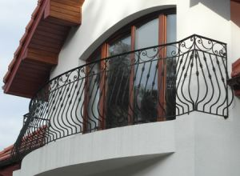
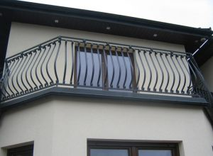
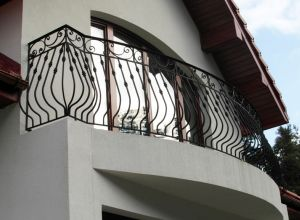

Our company dealing in the artistic smithery, offers clients forged external balustrades. Wrought balcony balustrades give the building character and dignity. Balustrades are resistant to all weather conditions. The prices of our services are set individually. Prices of individual elements can be found on our website.


